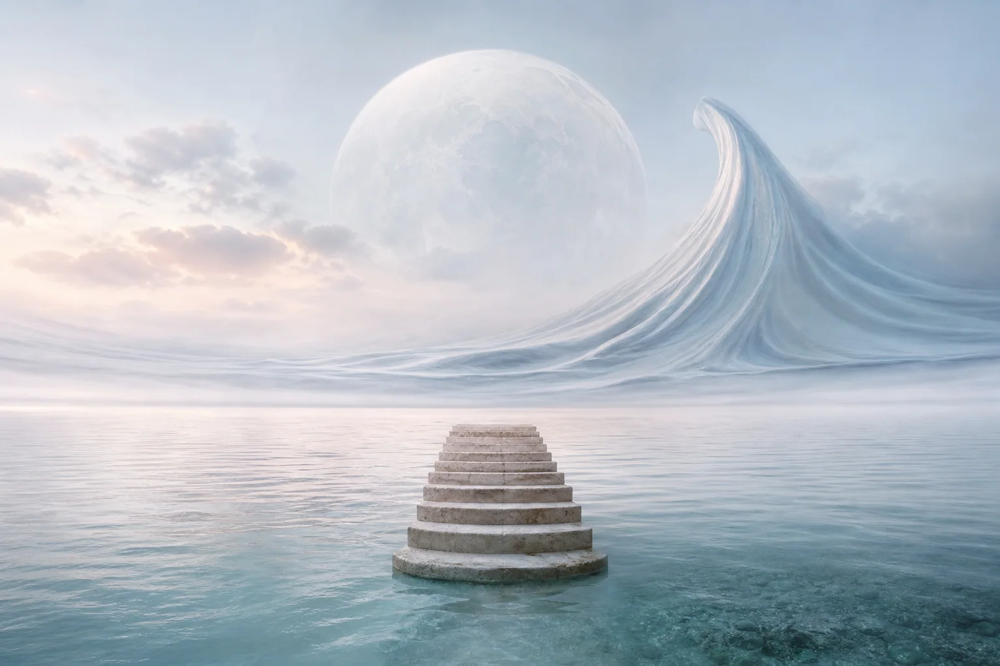

W
e walked until the last structure on land became a pale mark behind us. The sea was quiet, but not empty. Its surface carried every color the sky had forgotten.
Some landscapes ask to be crossed. Others ask us to stop measuring distance.

Notes between water & sky
At 05:17, the horizon disappeared. Water became atmosphere; atmosphere became a room with no walls.
W
e walked until the last structure on land became a pale mark behind us. The sea was quiet, but not empty. Its surface carried every color the sky had forgotten.
Some landscapes ask to be crossed. Others ask us to stop measuring distance.
Drag the horizon
“The sea is not a place.
It is a way of paying attention.”